GIS Day 特别篇：不得不了解的中国基本地理国情
Basic geographical conditions of China
引言
中国是世界四大文明古国之一，是以华夏文明为源泉、中华文化为基础，并以汉族为主体民族的多民族国家。汉族与少数民族被统称为“中华民族”，又自称为炎黄子孙、龙的传人。
中国不但历史悠久，而且疆域辽阔。
中国领土南北跨越的纬度近50°，东西跨越经度超过60°，陆地面积约960万平方公里，领海约470万平方公里。作为一名地理学科学生、学者、工作者，祖国的基本地理国情，不得不了解一下。
位置领土
中国的海陆位置：亚洲东部 太平洋西岸
中国半球位置：东半球 北半球
中国领土辽阔广大，陆地总面积963.4057万平方公里，仅次于俄罗斯、加拿大，居世界第3位
中国南北相距5500公里（跨越纬度近50°），东西相距5200公里（跨越经度超60°）
边疆至点
最北端
黑龙江省漠河以北黑龙江主航道中心线上（53°33′ N）最西端
新疆维吾尔自治区乌恰县以西的帕米尔高原（73°29'59.79" E）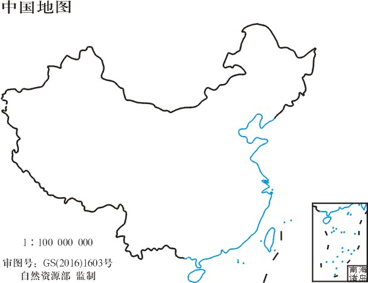
最东端
黑龙江省抚远县境内黑龙江与乌苏里江主航道中心线汇流处（135°2′30" E）最南端
南海南沙群岛中的曾母暗沙南侧（3°31′00″ N）行政区划
中国现行政区基本划分为省（自治区、直辖市）、县（县级市、自治县）和乡（镇）三级，中国有34个省级行政区，包括23个省、5个自治区、4个直辖市、2个特别行政区。
东北三省 辽宁省 吉林省 黑龙江省
北部边疆自治区 内蒙古自治区
黄河中下游六省、直辖市
河北省 山西省 河南省 山东省 北京市 天津市
长江中下游七省、直辖市
湖南省 湖北省 江苏省 浙江省 安徽省 江西省 上海市
南部沿海七省、特别行政区
广东省 广西壮族自治区 海南省 香港特别行政区 澳门特别行政区 福建省 台湾省
西北五省、自治区
陕西省 甘肃省 青海省 宁夏回族自治区 新疆维吾尔自治区
西南五省、直辖市
四川省 重庆市 贵州省 云南省 西藏自治区

边界邻国
中国陆地边界长达2.28万公里，大陆海岸线长达1.8万公里，自北向南濒临的近海有渤海、黄海、东海和南海。
中国的领海，是指从海岸基线向海上延伸到12海里的海域。沿海分布有台湾岛、海南岛、崇明岛、舟山群岛、南海诸岛等5000多个大大小小的岛屿。
陆上邻国：朝鲜、俄罗斯、蒙古、哈萨克斯坦、吉尔吉斯斯坦、塔吉克斯坦、阿富汗、巴基斯坦、印度、不丹、尼泊尔、缅甸、老挝、越南共14个。
海上邻国：日本、韩国、菲律宾、文莱、马来西亚、印尼。
地形地貌
在中国辽阔的大地上，有雄伟的高原、起伏的山岭、广阔的平原、低缓的丘陵，还有四周群山环抱、中间低平的大小盆地。这些形态各异的地形，以山脉为骨架交错分布。
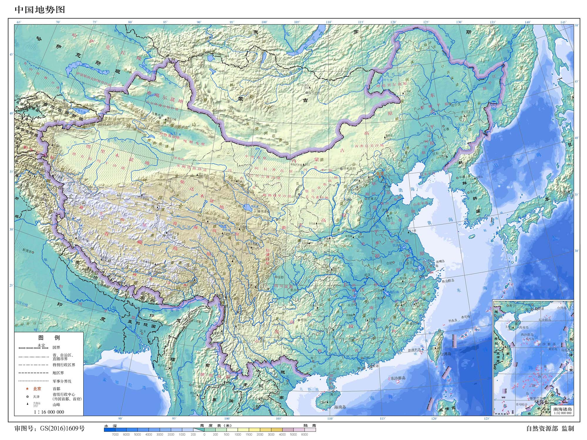
四大高原
| 名称 | 区位 | 特征 | 风景 |
|---|---|---|---|
| 青藏高原 | 中国西南部 | ①地势高，多雪山冰川 ②面积广 ③世界屋脊 | 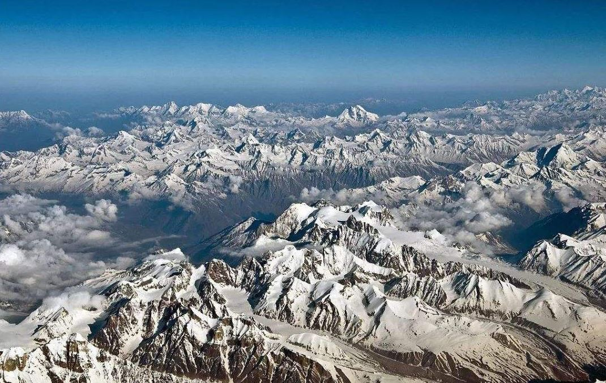 |
| 内蒙古高原 | 中国北部 | ①山脉少 ②多草原、戈壁、沙漠 | 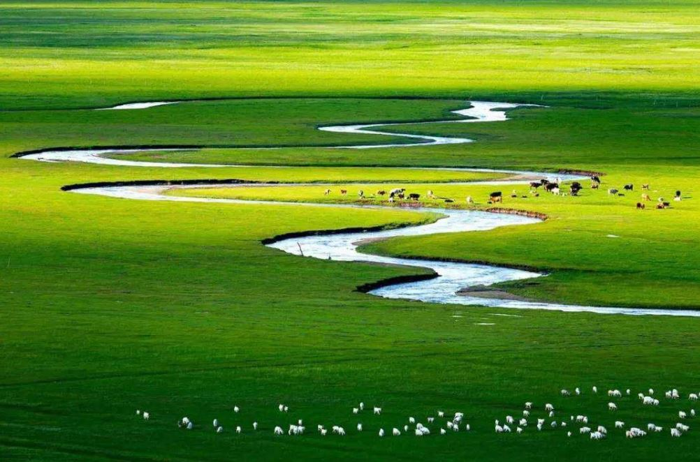 |
| 黄土高原 | 中国中部 | ①世界黄土分布最广 ②千沟万壑 ③植被少，水土流失 | 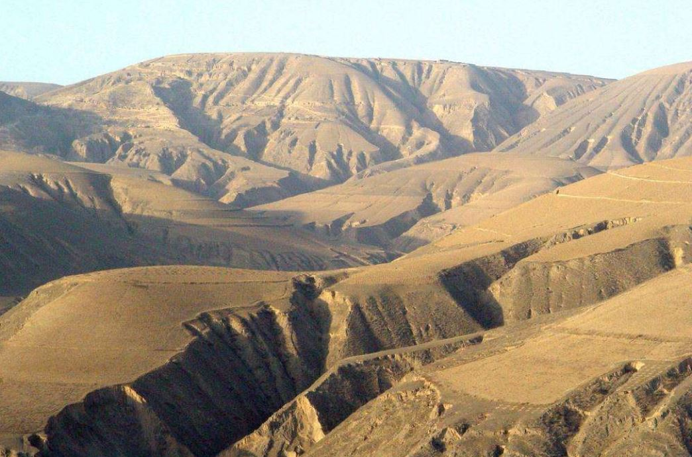 |
| 云贵高原 | 中国西南部 | ①地势崎岖不平 ②多峡谷，多盆地 ③喀斯特地貌 | 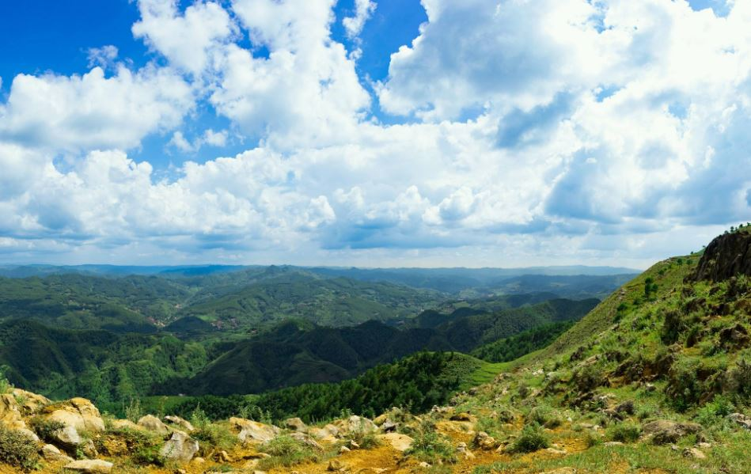 |
四大盆地
| 名称 | 区位 | 特征 | 风景 |
|---|---|---|---|
| 塔里木盆地 | 新疆南部 | ①面积最大 ②沙漠广 ③地势西高东低，边缘有绿洲 | 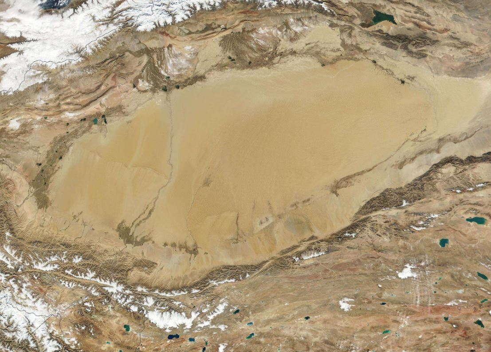 |
| 准噶尔盆地 | 新疆北部 | ①塞北江南 ②多风蚀地形 ③地势东高西低 | 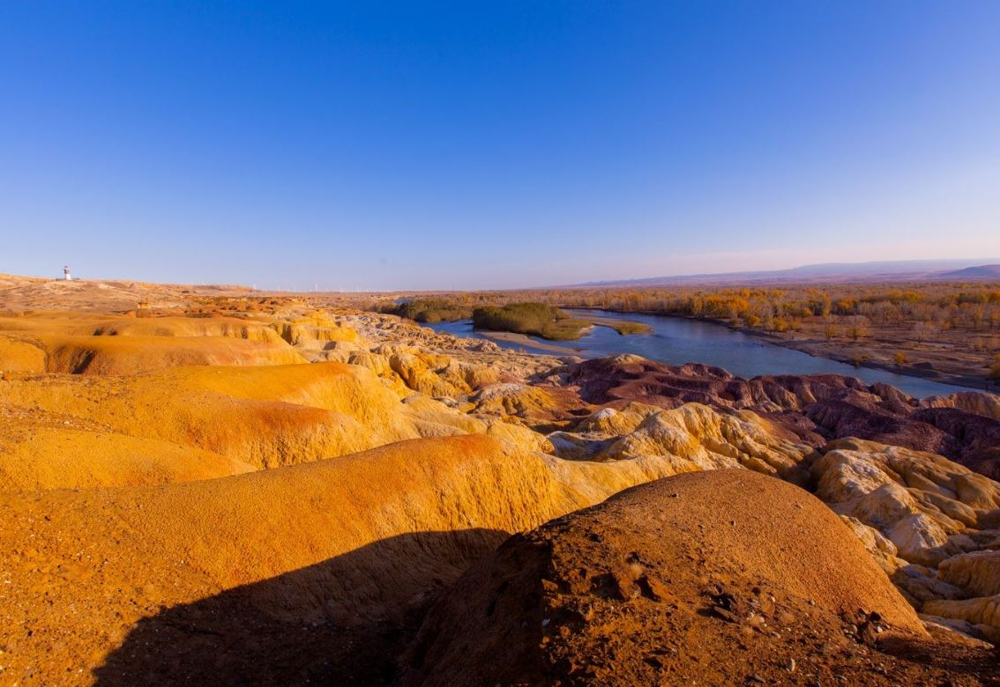 |
| 柴达木盆地 | 青海省西北部 | ①地势高 ②东南多盐湖沼泽 ③矿藏聚宝盆 | 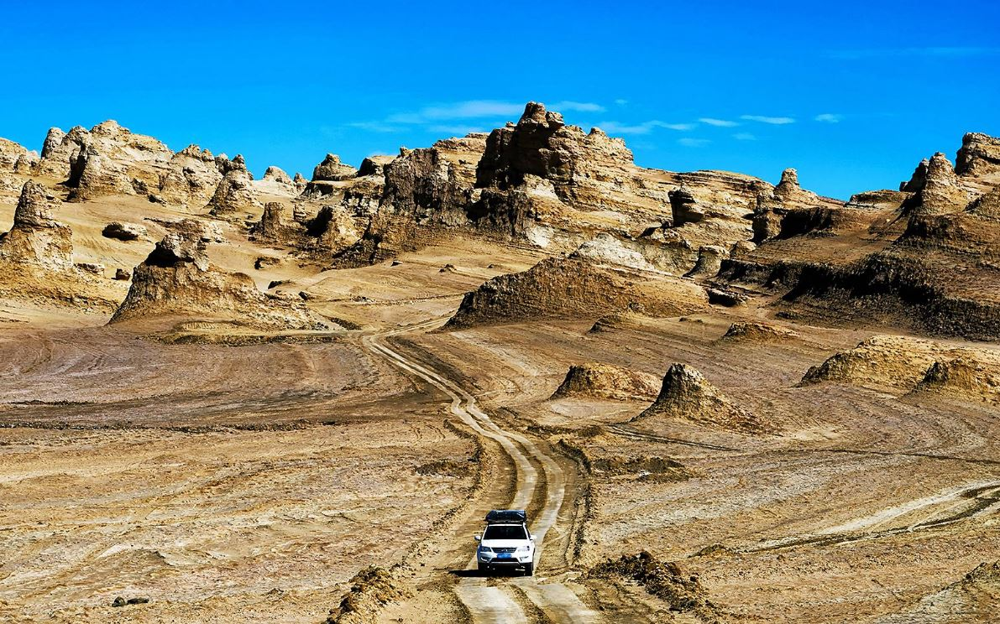 |
| 四川盆地 | 四川东部 | ①北高南低 ②河流众多 ③紫色盆地 | 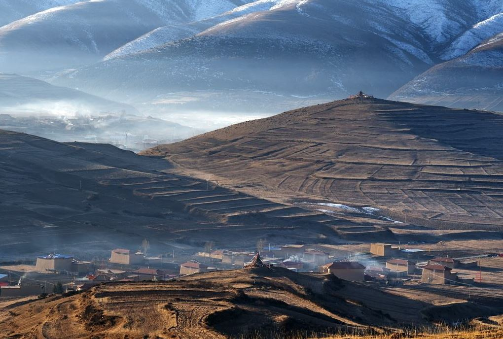 |
三大平原
| 名称 | 区位 | 特征 | 组成 | 风景 |
|---|---|---|---|---|
| 东北平原 | 中国东北部 | ①中国最大的平原 ②海拔多在200米以下 | 三江平原 松嫩平原 辽河平原 | 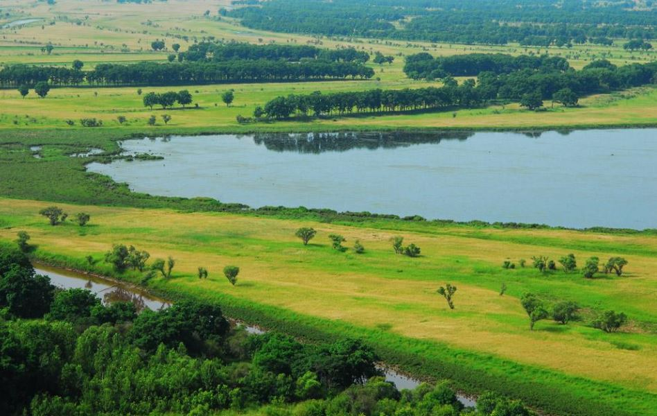 |
| 华北平原 | 中国东部偏北 | ①中国第二大平原 ②地表平坦 | 海河平原 黄淮平原 | 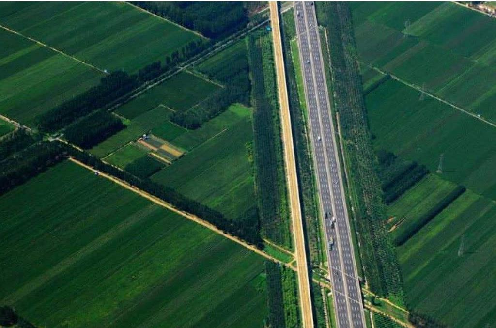 |
| 长江中下游平原 | 中国中、东部 | ①地势低平 ②河网密布 | 江汉平原 洞庭湖平原 鄱阳湖平原 江淮平原 长江三角洲 | 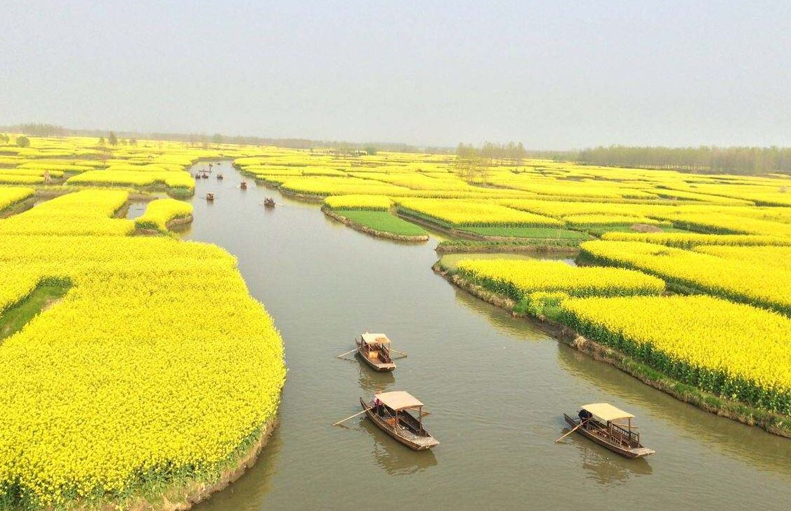 |
主要山脉
| 名称 | 走向 | 风景 |
|---|---|---|
| 天山-阴山-燕山 | 东-西 | |
| 昆仑山-秦岭 | 东-西 | |
| 南岭 | 东-西 | |
| 大兴安岭-太行山-巫山-雪峰山 | 东北-西南 | |
| 长白山-武夷山 | 东北-西南 | |
| 台湾山脉 | 东北-西南 | |
| 贺兰山 | 南-北 | |
| 横断山 | 南-北 | |
| 阿尔泰山 | 西北-东南 | |
| 祁连山 | 西北-东南 | |
| 喜马拉雅山 | 西北-东南 |
著名地貌
| 名称 | 特征 | 典型 | 风景 |
|---|---|---|---|
| 喀斯特地貌 | 又叫岩溶地貌，由水对可溶性岩石进行溶蚀形成 | 湖南张家界 云南石林 黄果树瀑布 四川九寨沟 广西桂林山水 | 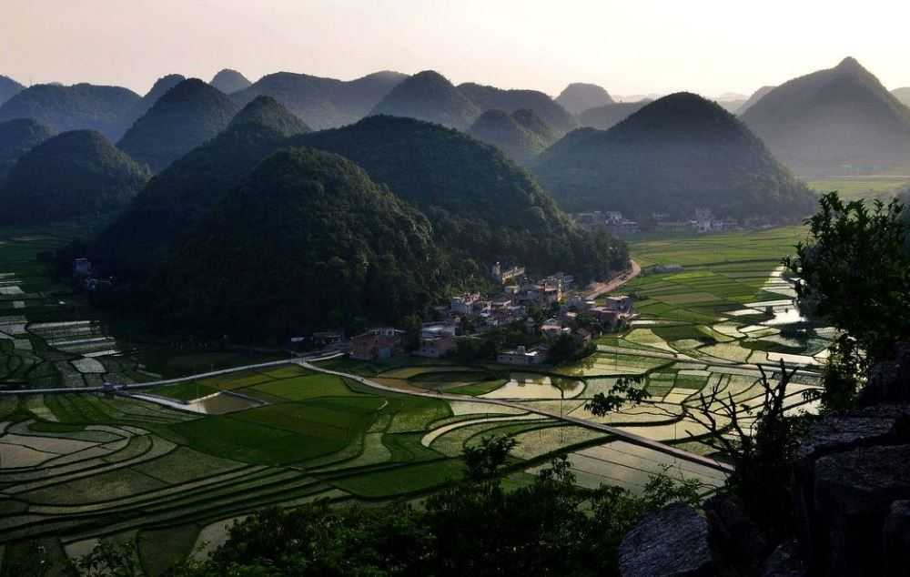 |
| 丹霞地貌 | 新疆北部 | 福建武夷山 广东丹霞山 贵州赤水 甘肃张掖 | 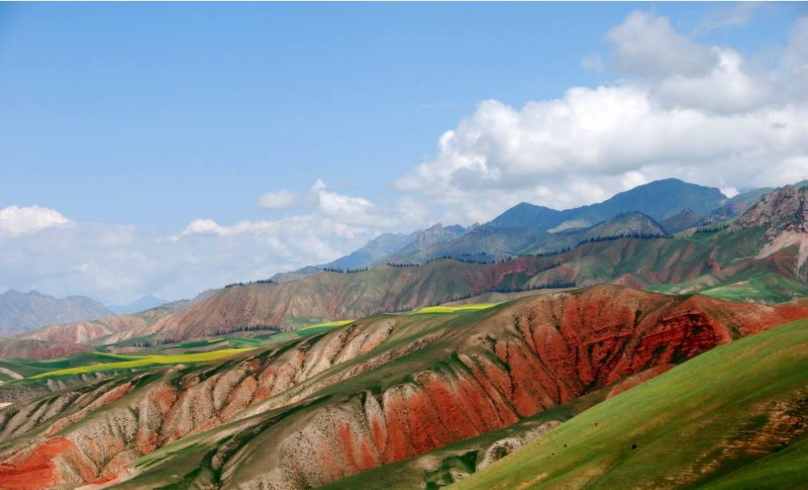 |
| 雅丹地貌 | 风蚀地貌 | 青海柴达木盆地的魔鬼城 |  |
| 冰川地貌 | 有冰川作用塑造的地貌，广泛分布 | 北起阿尔泰山、天山、帕米尔 南至青藏高原、横断山区 | 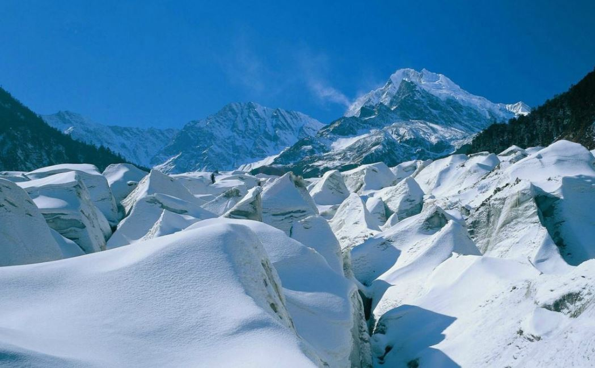 |
河流湖泊
中国流域面积超过1000平方千米的河流有1500多条。
长江黄河
| 名称 | 特征 | 流经 | 风景 |
|---|---|---|---|
| 长江 | ①长江源包括昆仑山至唐古拉山间的广阔地域 ②自西而东横贯中国中部 ③全长6300余公里 ④流域面积约180万平方公里 ⑤居世界第三位 | 青海省 西藏自治区 四川省 云南省 重庆市 湖北省 湖南省 江西省 安徽省 江苏省 上海市 | 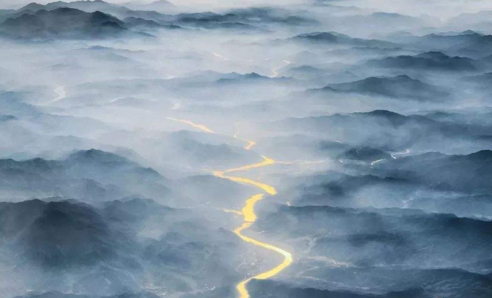 |
| 黄河 | ①中国北部大河 ②青海省玛多县多石峡以上地区为黄河源区 ③全长约5464公里 ④流域面积约75万平方公里 ⑤中国第二长河 | 青海省 四川省 甘肃省 宁夏回族自治区 内蒙古自治区 陕西省 山西省 河南省 山东省 | 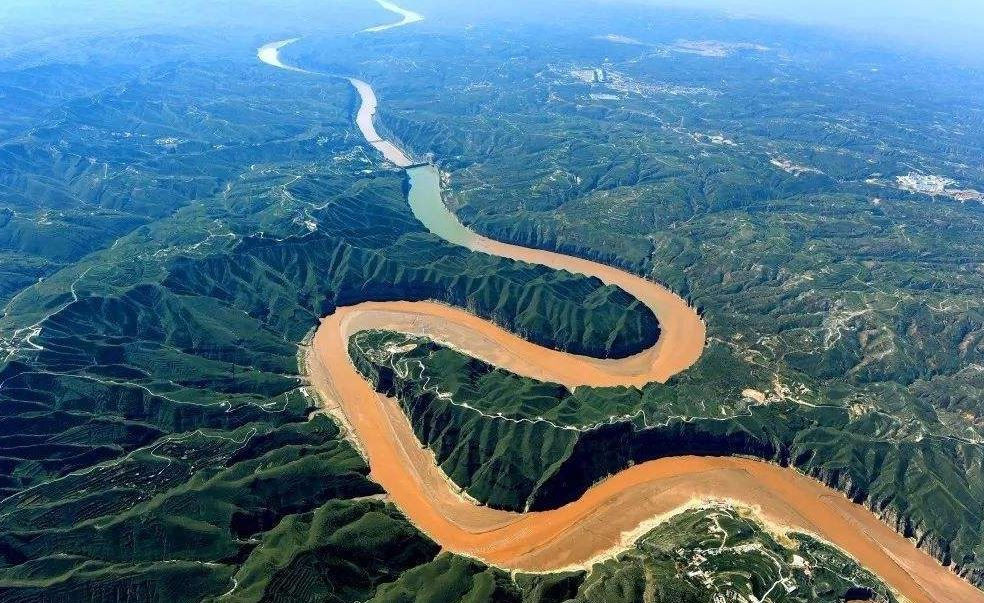 |
主要水系
| 名称 | 组成 | 风景 |
|---|---|---|
| 太平洋水系 | 黑龙江 松花江 嫩江 乌苏里江 绥芬河 图们江 鸭绿江 辽河 滦河 海河 黄河 洮河 大黑河 汾河 渭河 沂河 淮河 长江 雅砻江 大渡河 岷江 嘉陵江 乌江 澧水 沅江 资水 湘江 汉水 赣江 钱塘江 瓯江 闽江 九龙江 韩江 浊水溪 下淡水溪 珠江 柳江 郁江 桂江 北江 东江 鉴江 南渡河 元江 澜沧江 | 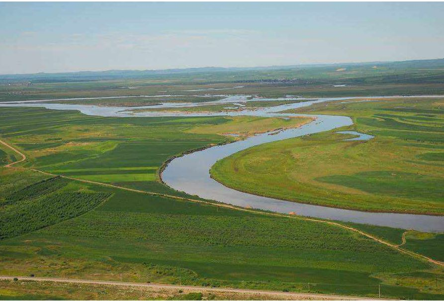 |
| 印度洋水系 | 怒江 雅鲁藏布江 | 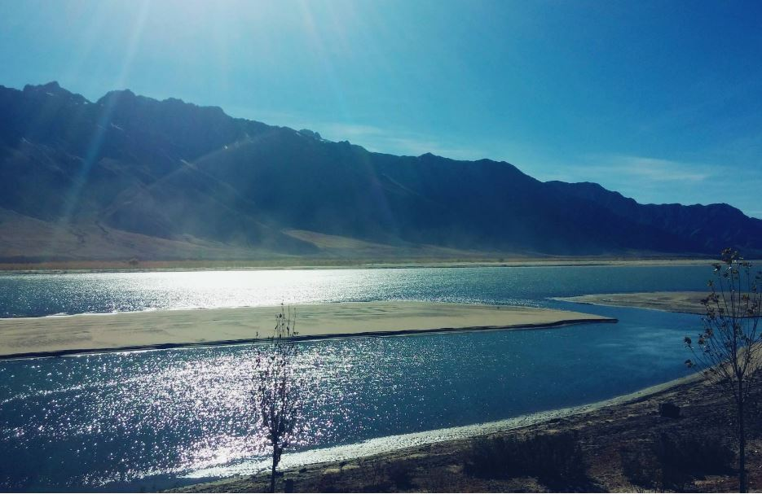 |
| 北冰洋水系 | 额尔齐斯河 | 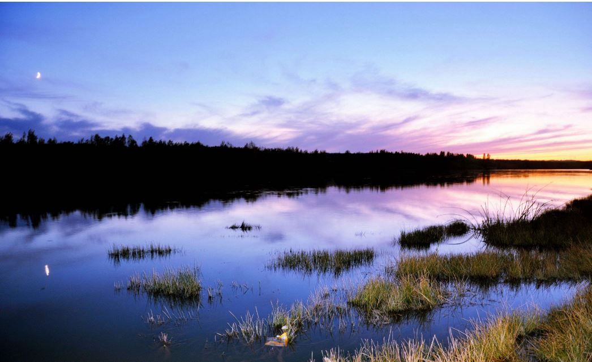 |
| 内流河 | 乌伦古河 伊犁河 玛纳斯河 阿克苏河 塔里木河 喀什噶尔河 叶尔羌河 和田河 车尔臣河 格尔木河 疏勒河 | 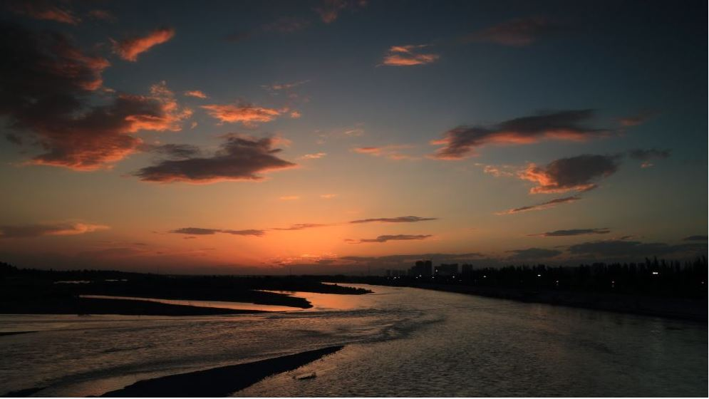 |
淡水湖
| 名称 | 区位 | 特征 | 风景 |
|---|---|---|---|
| 太湖 | 江苏省南部 长江中下游 | ①湖泊面积2428平方公里 ②西侧和西南侧为丘陵山地 ③东侧以平原及水网为主 ④盛行东南风，温和多雨 | 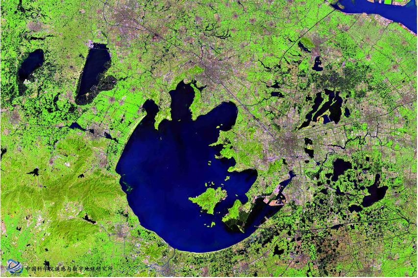 |
| 鄱阳湖 | 江西省北部 长江中下游南岸 | ①湖泊面积3150平方公里 ②中国第一大淡水湖 ③光能资源丰富 | 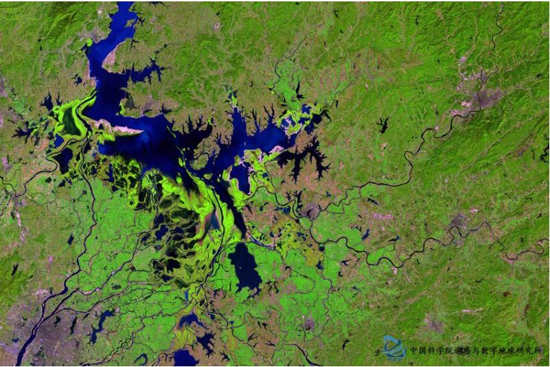 |
| 洞庭湖 | 湖南北部 长江中游荆江河段以南 | ①湖泊面积2579平方公里 ②中国传统文化发源地，湖区名胜繁多 ③五湖之首 |  |
| 洪泽湖 | 江苏省西部 淮河下游 | ①湖泊面积2069平方公里 ②历史悠久，资源丰富 | 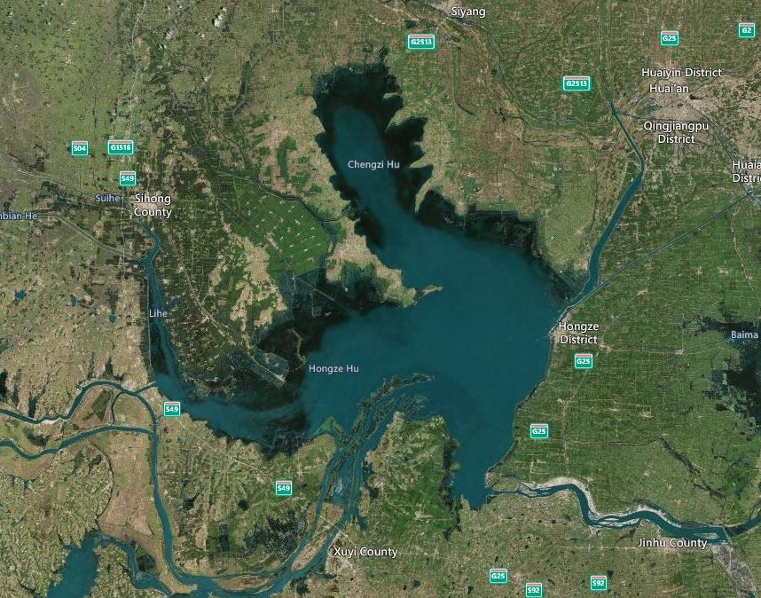 |
| 巢湖 | 安徽省中部 | ①湖泊面积825平方公里 ②湖面由西岸、南岸微向北岸和东岸倾斜 ③“天下有事是必争之地” | 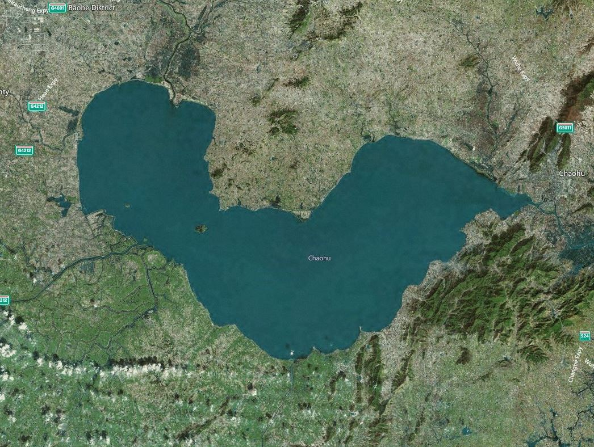 |
咸水湖
| 名称 | 区位 | 特征 | 风景 |
|---|---|---|---|
| 青海湖 | 青藏高原东北部、青海省境内 | ①中国最大的内陆湖 ②湖泊面积4435.69平方公里 | 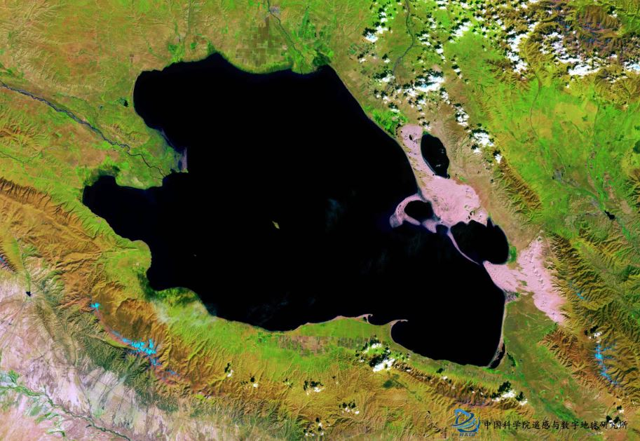 |
| 纳木错 | 西藏自治区中部 | ①世界海拔最高的大型湖泊 ②湖泊面积2015平方公里 ③古象雄文明发祥地 | 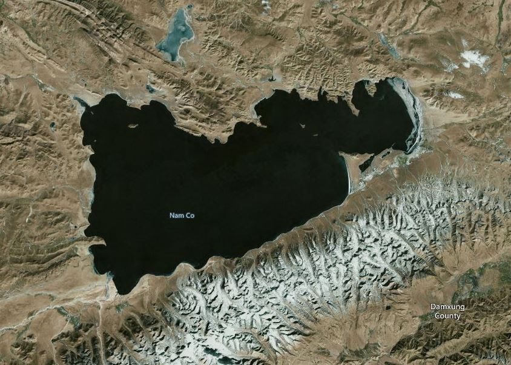 |
| 艾丁湖 | 新疆维吾尔自治区吐鲁番市 | ①中国陆地的最低点 ②湖泊面积150平方公里 ③湖面比海平面低154.31米 | 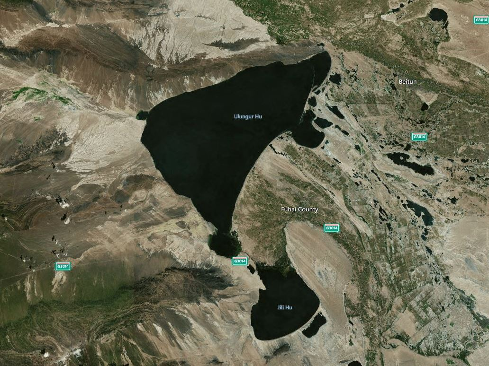 |
气候特征
温度带
温度带
| 名称 | 积温 | 范围 | 耕作 | 作物 |
|---|---|---|---|---|
| 热带 | >8000℃ | 海南全省和滇、粤、台三省南部 | 水稻一年三熟 | 水稻、甘蔗、天然橡胶等 |
| 亚热带 | 4500℃—8000℃ | 秦岭—淮河以南，青藏高原以东 | 一年二至三熟 | 水稻、冬麦、棉花、油菜等 |
| 暖温带 | 3400℃—4500℃ | 黄河中下游大部分地区及南疆 | 一年一熟至两年三熟 | 冬麦、玉米、棉花、花生等 |
| 中温带 | 1600℃—3400℃ | 东北、内蒙古大部分及北疆 一年一熟 | 春麦、玉米、亚麻、大豆、甜菜等 | |
| 寒温带 | <1600℃ | 黑龙江省北部及内蒙古东北部 | 一年一熟 | 春麦、马铃薯等 |
| 青藏高原区 | <2000℃ | 青藏高原 | 部分地区一年一熟 | 青稞等 |
干湿划分
干湿划分
| 名称 | 水量（mm） | 干湿 | 分布 | 农业 |
|---|---|---|---|---|
| 湿润区 | >800 | 降水量>蒸发量 | 秦岭—淮河以南、青藏高原南部、内蒙古东北部、东北三省东部 | 以水田为主的农业 |
| 半湿润区 | >400 | 降水量>蒸发量 | 东北平原、华北平原、黄土高原大部、青藏高原东南部 | 旱地为主的农业 |
| 半干旱区 | <400 | 降水量<蒸发量 | 内蒙古高原、黄土高原的一部分、青藏高原大部 | 草原牧业、灌溉农业 |
| 干旱区 | <200 | 降水量<蒸发量 | 新疆、内蒙古高原西部、青藏高原西北部 | 高山牧业、绿洲灌溉农业 |
Fighting, GISer!
最新博文